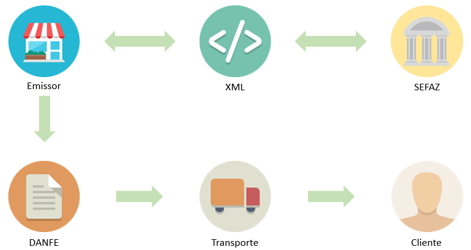
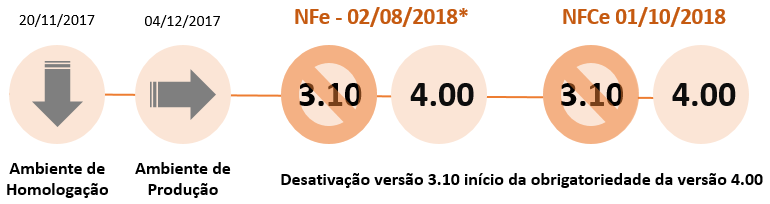

Texto atualizado em 01/2025.
A Nota Fiscal Eletrônica (NFe) instituída em 2007, vem recebendo atualizações de leiaute a cada dois anos. Em 2016 com a publicação da Nota Técnica 2016 002, houve o lançamento da nova versão 4.00 da NFe.
Com esse novo leiaute, é necessário ficar atento às diversas mudanças e impactos gerados nos processos de emissão de nota fiscal das empresas. Abaixo, veja informações mais detalhadas sobre essa nova versão da NFe.
A emissão da NFe é um processo todo digital, no qual a empresa realiza a venda, emite eletronicamente um arquivo em XML, assina digitalmente e transmite para a Secretaria de Fazenda Estadual (SEFAZ).
O Fisco realiza a pré-validação da nota, autorizando a operação comercial e permitindo que a empresa imprima, em papel comum o Documento Auxiliar da Nota Fiscal Eletrônica (DANFE). A Receita Federal atua como o repositório nacional das NFe permitindo as empresas, clientes, fornecedores e demais interessados consultarem a validade das NFes.
Entenda o fluxo de informações:

Atualmente são aceitos os leiautes da NFe e NFCe nas versões 3.10 e 4.00, porém a partir de 02/08/2018 torna-se obrigatório a adesão e emissão na versão 4.00 para NFe e em 01/10/2018 para NFCe, pois após dessas datas, o ambiente de emissão na versão 3.10 para de operar.
IMPORTANTE
Além da necessidade de atualizar a versão do Gestão Empresarial | ERP, Gestão Empresarial PME | GO UP, eDocs e Gestão de Lojas para as versões descritas abaixo, as alterações da nova versão do leiaute exigem a adequação de parametrizações e customizações existentes na sua base. Confira todas as instruções no nosso checklist de migração da versão.
Por isso, é imprescindível que cada cliente crie seu próprio planejamento de adequação dos processos e homologação das funcionalidades após atualizar os sistemas para as versões mínimas aceitas, conforme o checklist.í nSiommaesnte com esse planejamento será possível evitar indisponibilidade do faturamento e perdas financeiras na sua empresa.
Programe-se!
O prazo para que as empresas se adequem é:
